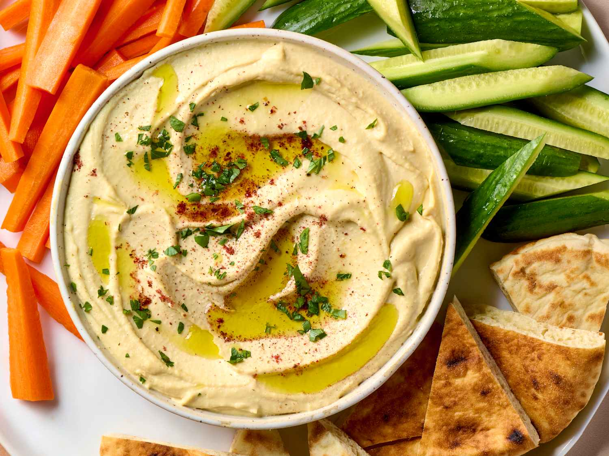

Hummus

Description
This classic hummus recipe combines chickpeas, garlic, tahini, and lemon juice in a blender to make a delicious smooth and creamy dip, perfect for serving with warm pita bread or veggies for dipping. This recipe has been passed down for many generations.
Ingredients
- 2 cloves garlic
- 1 can chickpeas, half the liquid reserved
- 4 tablespoons lemon juice
- 2 tablespoons tahini
- 1 teaspoon salt, or to taste
- 2 tablespoons olive oil
- black pepper to taste
Steps
- Chop garlic in a blender.
- Pour chickpeas into the blender, reserving about 1 tablespoon for garnish. Add reserved liquid, lemon juice, tahini, and salt to taste; blend until creamy and well mixed.
- Transfer mixture to a medium serving bowl. Drizzle olive oil and sprinkle pepper over the top. Garnish with reserved chickpeas.
Home